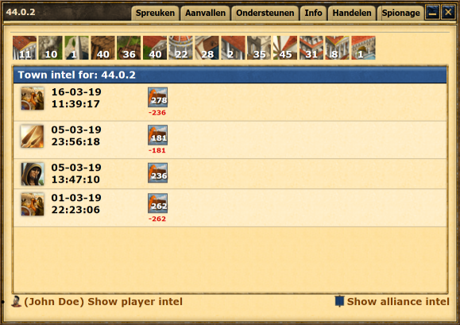

2. Browsing collected intel
Use the 'Intel' button in the town context menu to open the town intelligence window.
In this window you will be able to see the collected intel for a specific town as shown on the right.
You will also be able to view an overview of player and alliance intel on grepodata.com
